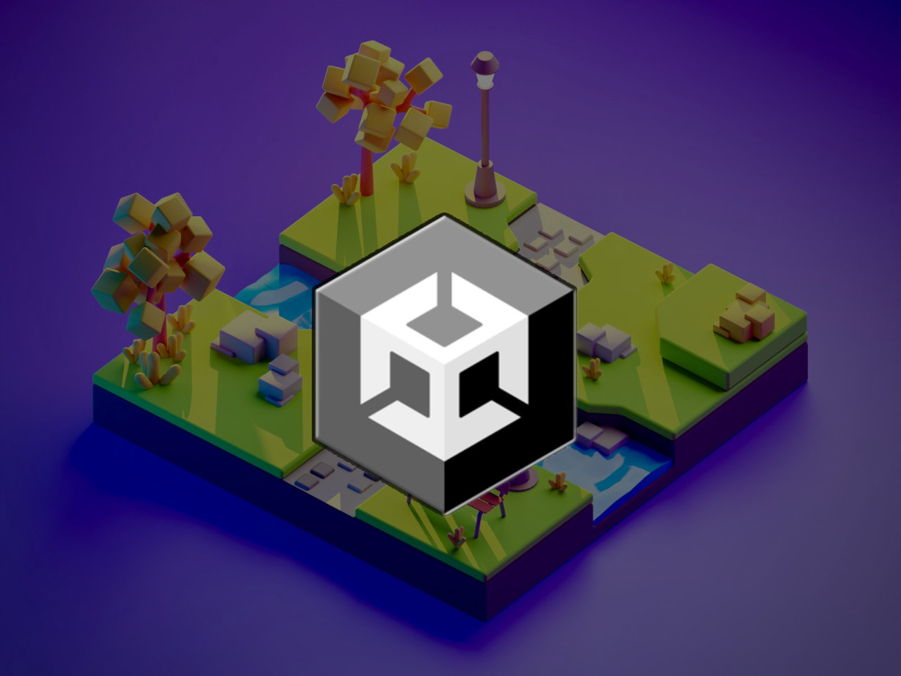

Création de jeu vidéo
Créer un jeu vidéo par curiosité technique.

Contexte
Tout a commencé au collège, lors d'un projet de NSI qui consistait à créer un jeu vidéo en python. Dans mon groupe, la motivation manquait, alors j'ai pris les devants : j'ai laissé mes camarades s'occuper des rapports écrits pour me consacrer entièrement au codage d'un jeu de recherche d'objets dans des images. Cependant, après avoir rendu le projet, je suis personnellement resté sur ma faim. Récemment, en jouant à un titre indépendant sur mobile, ma curiosité a été piquée à nouveau. Ce déclic m'a poussé à m'investir à fond pour maîtriser, cette fois-ci, toutes les facettes de la création et donc pour franchir un nouveau cap technique, j'ai décidé de laisser Python de côté pour me lancer pleinement sur Unity.
Brainstorming
Pour ce nouveau départ, j'ai décidé de structurer mes idées de manière méthodique. J’ai d’abord listé toutes mes inspirations sur un premier tableur, avant de les filtrer pour n’en garder qu’une seule : la base même de mon futur jeu. Une fois cette base solide établie, j’ai élaboré un second document beaucoup plus détaillé. Étape par étape, j’y ai planifié le développement, en triant les mécaniques, l'univers et les éléments d’histoire que je souhaitais implémenter. Cette phase de réflexion m'a permis de transformer une simple envie en une véritable feuille de route structurée et organisée.

Création sur Unity Hub
Une fois mon plan établi, je me suis lancé sur Unity. Au départ, l'immensité de l'outil m'a arrêté net et j'ai vite compris qu'apprendre seul, ne suffirait pas. Je me suis alors imposé un apprentissage en suivant des tutoriels complets sur YouTube, Tiktok et des forums. Loin de simplement copier le code, je me servais de chaque projet de test comme d'un laboratoire pour expérimenter mes propres variantes et comprendre la logique du moteur. Ce n'est qu'après avoir acquis cette base technique et cette confiance que j'ai enfin ouvert un projet vide pour débuter ma propre création.
Modélisation 3D et Sound Design
Lors de la phase de développement, j'ai été confronté à un obstacle majeur : l'absence de modèles 3D pour tester mes scripts en temps réel. Au lieu de me décourager, j'ai décidé de prendre les devants en apprenant à utiliser Blender pour modéliser mes propres objets et créer mes propres textures. En parallèle, pour donner une véritable identité et de la vie à ma création, j'ai conçu mes propres effets sonores à l'aide d'un microphone et d'Audacity. Cette approche personnelle m'a permis de ne plus dépendre de ressources open source et de maîtriser les aspect technique de mon projet.